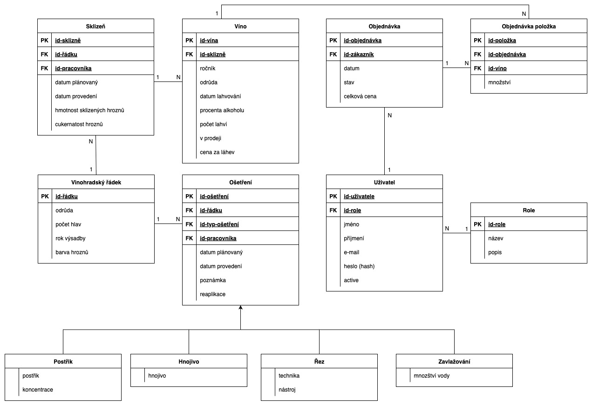

<!DOCTYPE html>
<html lang="en">

<head>
	<meta charset="UTF-8">
	<meta name="viewport" content="width=device-width, initial-scale=1.0">
	<title>Document</title>
</head>

<body>

</body>

</html>
<html>

<head>
	<meta http-equiv="content-type" content="text/html; charset=iso-8859-2" />
	<title>Projekt IIS</title>
	<style type="text/css">
		table {
			border-collapse: collapse;
		}

		td,
		th {
			border: 1px solid black;
			padding: 0.3em 0.5em;
			text-align: left;
		}

		dt {
			font-weight: bold;
			margin-top: 0.5em;
		}
	</style>
</head>

<body>

	<!-- Zkontrolujte prosím nastavení kódování v hlavičce dokumentu 
     podle použitého editoru -->

	<h1>Vinařství</h1>

	<dl>
		<dt>Autoři</dt>
		<dd>Nikol Vaněčková
			<a href="mailto:xvanecn00@stud.fit.vutbr.cz">xvanecn00@stud.fit.vutbr.cz</a> -
			stránky pro vinaře a pracovníka vinařství
		</dd>
		<dd>Matej Menich
			<a href="mailto:xmenicm00@stud.fit.vutbr.cz">xmenicm00@stud.fit.vutbr.cz</a> - <!-- Nahradte email -->
			stránky pro návštěvníka a zákazníka
		</dd>
		<dd>Jáchym Gregor
			<a href="mailto:xgregoj00@stud.fit.vutbr.cz">xgregoj00@stud.fit.vutbr.cz</a> - <!-- Nahradte email -->
			stránky pro administrátora a přihlášení
		</dd>
		<dt>URL aplikace</dt>
		<dd><a href="https://iis-vinarstvi.infinityfree.me/">https://iis-vinarstvi.infinityfree.me/</a></dd>
		<!-- Nahradte URL -->
		<!-- <dd>(pokud má aplikace více vstupních stránek, napište obdobně další URL)</dd> -->
	</dl>

	<h2>Uživatelé systému pro testování</h2>
	<p>Uveďte prosím existující zástupce <strong>všech rolí uživatelů</strong>.</p>
	<table>
		<tr>
			<th>Login</th>
			<th>Heslo</th>
			<th>Role</th>
		</tr>
		<tr>
			<td>admin@vinarstvi.cz</td>
			<td>admin123</td>
			<td>Administrátor</td>
		</tr>
		<tr>
			<td>pracovnik@vinarstvi.cz</td>
			<td>pracovnik</td>
			<td>Pracovník</td>
		</tr>
		<tr>
			<td>vinar@vinarstvi.cz</td>
			<td>vinar1</td>
			<td>Vinař</td>
		</tr>
		<tr>
			<td>zakaznik@vinarstvi.cz</td>
			<td>heslo123</td>
			<td>Zákazník</td>
		</tr>
	</table>

	<!-- DOPLNIT VIDEJKO A MOZNA USE-CASE??-->
	<p>(Diagram případů užití není nutné vkládat, pokud IS implementuje role a případy užití definované zadáním.)</p>

	<h3>Video</h3>
	<dd><a href="https://www.youtube.com/watch?v=apwAJ3VDd7Q">https://www.youtube.com/watch?v=apwAJ3VDd7Q</a></dd>
	<!-- <p>Přiložte odkaz na komentované video demostrující použití informačního systému. Zaměřte se na případy užití definované zadáním (např. registrace uživatele, správa uživatelů a činnosti jednotlivých rolí). Video nahrajte například na VUT Google Drive, kde ho bude možné přímo spustit z odkazu.</p>  -->

	<h3>Implementace</h3>
	<h4>Matej Menich</h4>
	<p>Prohlížení vína (metoda index) je implementováno pomocí VinoController, který vypíše všechny vína v databázi
		podle ročníku.</p>
	<p>Prohlížení (metoda index) a upravování nákupního košíku (metody add, update, clear, remove) je implementováno
		pomocí KosikController, který také v sekci košík vypíše historii objednávek zákazníka (metoda index).</p>
	<p>O vybavení objednávky se stará ObjednavkaController. Metoda create vytvoří objednávku, následne jí přidá do
		databáze a upraví sklad v databázi. Metoda potvrdena načte vytvořenou objednávku a zobrazí ji.</p>

	<h4>Jáchym Gregor </h4>
	<p>Auth: signUp vytváří uživatele po validaci a se zahashovaným heslem; signIn ověřuje údaje a vytváří session/token; signOut ukončí session. Přístup k chráněným akcím zajišťuje middleware.</p>
	<p>Admin: administrace uživatelů (seznam, detail, změna rolí, smazání) a přehled objednávek; všechny akce jsou omezeny autorizací (role admin).</p>

	<h4>Nikol Vaněčková </h4>
	<h5>Vinař</h5>
	<p>Implementováno v VinarController, metody index, rowCreate, storeRow, editRow, updateRow, deleteRow.
		Zobrazování a úprava probíhá přes Blade šablony vinar.blade.php, vinar_row_create.blade.php,
		vinar_row_edit.blade.php.
		Plánování a evidence ošetření a sklizní naprosto obdobně jen s rozdílem předpony osetreni a harvest.
		Správa vín a zařazení do prodeje:
		Činnosti v metodách createVino, storeVino, publishVino, unpublishVino.
		Odpovídající šablony jsou vinar-vino-create.blade.php, část Prodej ve vinar.blade.php.
		Veškeré ovládání dostupné pouze pro uživatele s rolí vinař nebo admin – kontrolováno v routách přes
		middleware role:3 nebo přímo ve VinarController.</p>
	<h5>Pracovník</h5>
	<p>Prohlížení přidělených ošetření a sklizní:
		Realizují metody index, editOsetreni, updateOsetreni, editHarvest, updateHarvest v PracovnikController.
		Zobrazování i úprava přes šablony pracovnik.blade.php, pracovnik_harvest_edit.blade.php apod.
		Značení ošetření a sklizní jako provedené (zadání data a údajů):
		Úprava hodnot v metodách updateOsetreni a updateHarvest (PracovnikController), formuláře ve výše zmíněných Blade
		šablonách.
		Přístup pouze pro uživatele s rolí pracovník nebo admin – ošetřeno middlewarem role:2 a kontrolou práv.</p>


	<h3>Databáze</h3>

	 
	<h2>Instalace</h2>

	<ol>
		<li>Ujistěte se, že máte PHP 8.1+, Composer, MySQL/MariaDB, a webserver (Apache/Nginx).</li>
		<li>V kořenové složce spusťte composer install (a případně npm install && npm run build pro frontend).</li>
		<li>Nakopírujte .env.example na .env a nastavte připojení k databázi a další parametry.</li>
		<li>Vygenerujte aplikační klíč příkazem php artisan key:generate.</li>
		<li>Vytvořte a inicializujte databázi pomocí php artisan:migrate (a případně php artisan db:migrate --seed).
		</li>
		<li>Pro lokální spuštění použijte php artisan serve nebo na hostingu přejděte v prohlížeči na adresu
			projektu.</li>
	</ol>
	<h2>Známé problémy</h2>
	<p>V tomto projektě není žádný známý problém.</p>

</body>

</html>